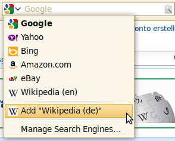
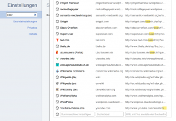

Recently I read a very good post about search engine autodiscovery by Jan Phillip. Did you know that many browsers can detect an internal search engine automatically? Firefox gives you the possibility to add such a search engine to your browser:
{kind=link}

OpenSearch
OpenSearch is a collection of technologies. This project aims to create a standard for publishing the metadata which describes a search engine: name, description, URL-pattern, language, ...
A OSSD looks like this:
<OpenSearchDescription xmlns="http://a9.com/-/spec/opensearch/1.1/">
<ShortName>Example</ShortName>
<Description>My example search engine</Description>
<InputEncoding>UTF-8</InputEncoding>
<Image height="16" width="16" type="image/x-icon">
http://example.org/favicon.ico
</Image>
<Url type="text/html"
template="http://example.org/index.html#search={searchTerms}"/>
</OpenSearchDescription>
The browser needs a hint where it can find the OSSD. So you have to add the following tag to your website:
<link title = "Example"
type = "application/opensearchdescription+xml"
rel = "search"
href = "http://example.org/opensearch.xml">
Now you can add the websites internal search engine automatically to Chrome and easily to Firefox and Internet Explorer 8+.
Additionally, you can add this little piece of JavaScript to tell Firefox 2+ and Internet Explorer 7+ that your site supports OpenSearch:
window.external.AddSearchProvider("http://exampl.org/opensearch.xml");
Google Chrome Autodiscovery
Google doesn't provide a UI for adding an internal search engine. Instead, you can add it via Settings:
{kind=link}

Chrome also adds the sites internal search engine automatically. Did you ever notice this? Here are some screenshots:
{kind=link}
{kind=link}
Interestingly the auto discovery only works if the search engine is at the homepage. You have to have either an input field of the type search or of the type text with the name s:
<form>
<input type="search" name="s" />
</form>
or
<form>
<input type="text" name="s" />
</form>
Drawbacks
- It seems as if Safari didn't support OSSD natively. (14.04.2011)
- Internet Explorer 9 seems not to support OSSD.
- No support by Opera.
This article in a nutshell
- opensearch.xml gives meta information about your websites internal search engine
- For Chromes autodiscovery you will need to add an input fild with "type=search" or "name=s"
- It is not necessary for Chrome that the user can see the form (display:none with CSS) nor that it the site start page is loaded long (meta redirect after 0 seconds).
- Adding the search engine manually is possible in almost all browsers
- With OSSD you can manage more than one internal search engine.
Further reading
- OpenSearch.org:
- David Walsh: Add Your Website to Firefox’s Search Bar Using OpenSearch XML.